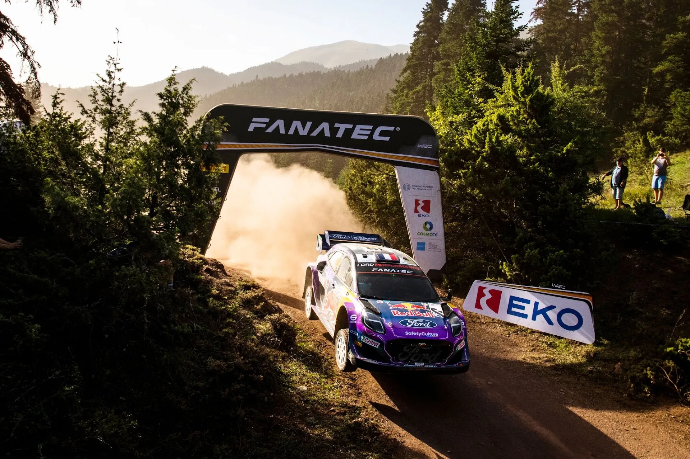
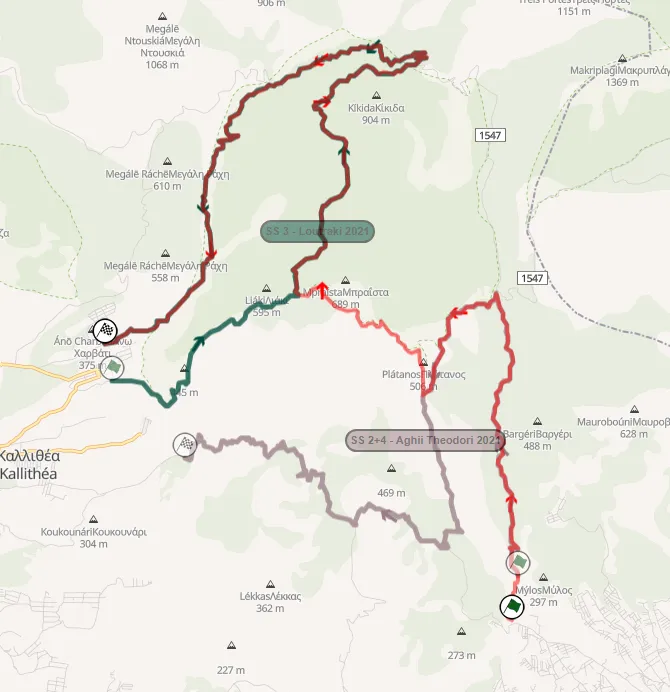
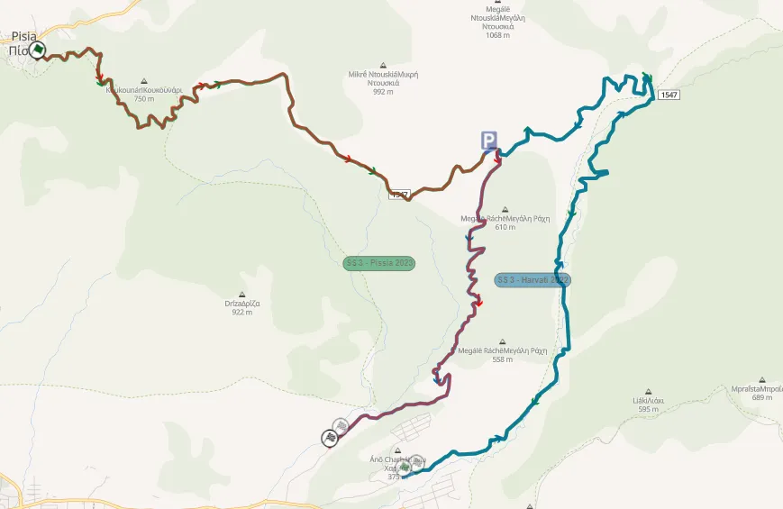
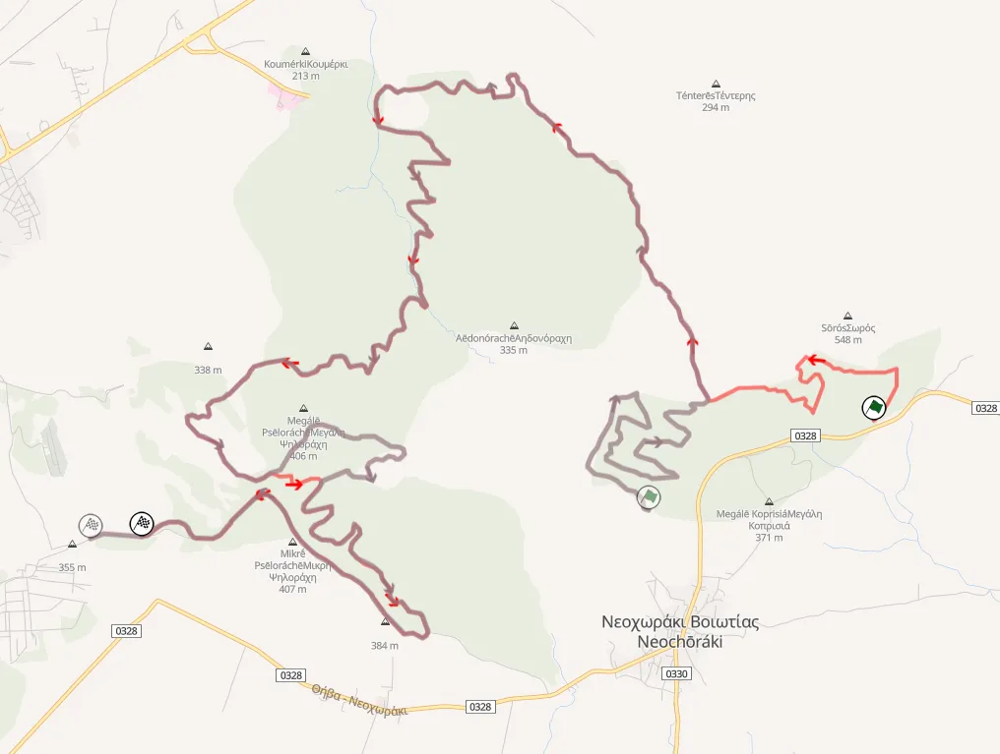
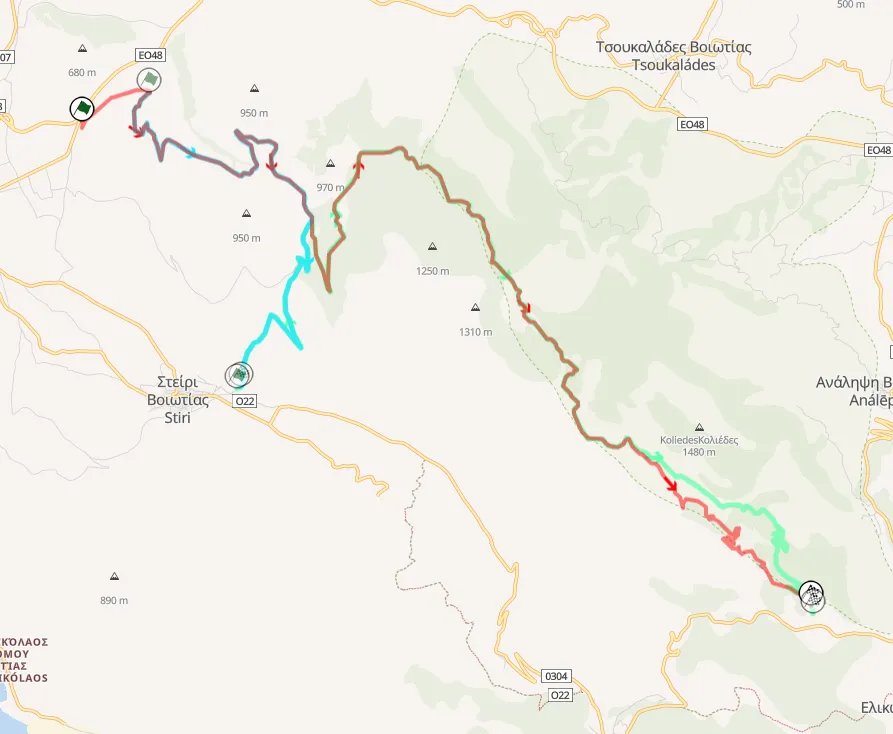
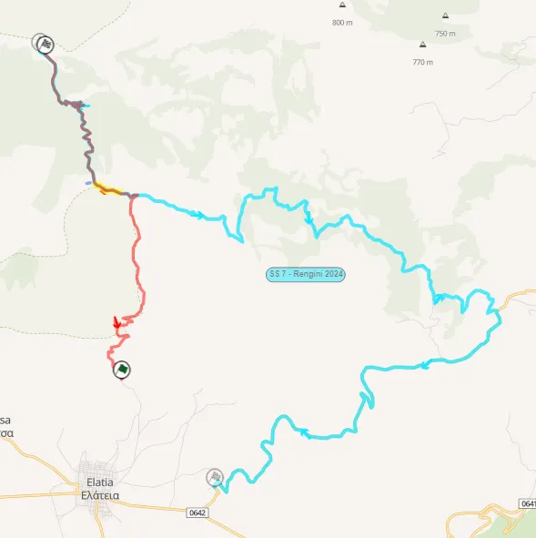
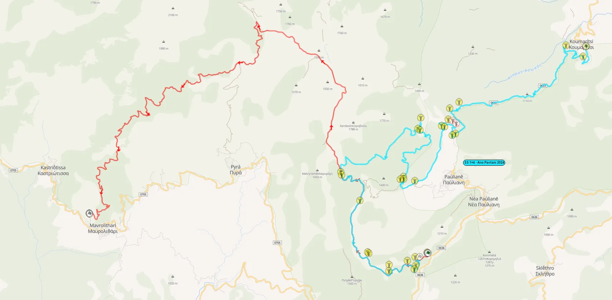
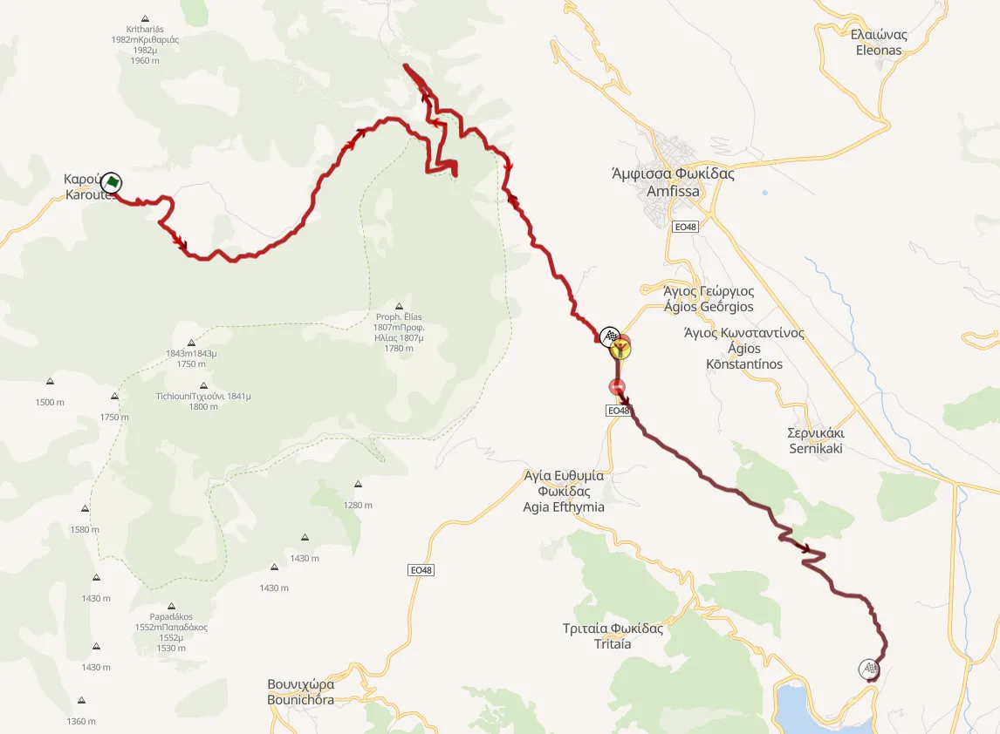

Acropolis Rally 2025 - Route Preview
The Acropolis Rally is the last of the three European rough gravel events of the season. It's the first time the event is held in the summer since its return to the WRC calendar in 2021.
In what is set to be the rally's last edition based in Lamia for the time being, this year's Acropolis will again start from Athens, heading to Loutraki on Friday, and from there to Lamia via the Stiri and Thiva stages in Viotia. Saturday is based in Fthiotida and Fokida, and Sunday sees the brand-new Smokovo stage pass through the Thessaly region for the first time since 1997.
This is the longest version of the rally in 12 years, featuring classic stages like Pavliani, Karoutes, and Tarzan, but not Eleftherohori.
Thursday
The first day of the Acropolis Rally features the pre-event Shakedown in Lamia, after which the crews will head to Athens for the rally's ceremonial start and a Super Special Stage.
Shakedown: Lygaria - 3.62km
Changes compared to 2024: Identical to the Shakedown used last year.
Stage description: The Lygaria shakedown is a decent representation of the roads for the rally, but not great for spectators, as there are no access points in the stage.
The start is on a technical and rough uphill section, with the stage becoming significantly wider and faster after 2.06 km, maintaining the same character until the end.
SSS1: EKO Athens SSS - 1.5km
Changes compared to 2024: New Stage.

Stage description: The event's opening stage is a Super Special in the Athens city centre. It's just across the Panathenaic Stadium where the event's ceremonial start is located.
The stage enters the Zappion Gardens, and does two loops on the roads that connect the hall to the avenue outside the park, with two donuts in each lap.
The area outside the Zappion Hall, where there will be two donuts
Friday
Friday is the first full day of the event. Its format is very similar to the one used from 2021 to 2023, with the crews having to make their way from Loutraki to Lamia. There's only one repeated stage, which means being first on the road will be a significant disadvantage, as they'll have to clear the loose gravel from the stages. It's the longest day of the rally both in terms of competitive kilometers and in liaison.
The two stages in the Loutraki area remain the same as in 2024, and the Stiri stage, which hasn't been used since 1997, returns.
SS2/4: Aghii Theodori - 26.76km
Changes compared to 2024: The stage is the same as last year, but has a new start. The stage is essentially a combination of the 2 stages in the Loutraki area from 2021, with this one following the 2021 version of Aghii Theodoroi, but with the difference that it turns right, not left, at 7km, avoiding the tarmac bit, and the very slow technical section. That section is the same one that had to be trimmed from the 2023 Loutraki stage, due to the heavy rain.

The 2025 Aghii Theodoroi stage, and the parts shared with the stages in the Loutraki area from 2021.
Stage description: The stage starts uphill, in a sandy, technical, medium-wide road. After about 3.9km, the stage becomes narrower and significantly rougher, with many exposed rocks. There are also a few "kick bumps" that make the cars go airborne. At 5.3km. there is a jump, which was a hot-spot amongst photographers in 2021.
After the jump, the stage speeds up for roughly a kilometre or so, and becomes somewhat smoother. After a hairpin left, the road becomes very rough and rocky, at parts exposing the old cobbled road that was constructed in World War 2.
After a short tarmac section, it joins a new gravel road, and it changes character completely. It becomes faster, wider, and much more flowing, with numerous cambered turns and long corners. At 11.5km the stage joins the route of the Loutraki stage from 2021.
It retains the same character until about the 14.9 kilometre mark, where it becomes twistier and narrower, and also starts to go downhill. At 17.5km there is a very technical and narrow part with a double hairpin. This is where Elfyn Evans rolled on Saturday last year.
It remains narrow and technical until approximately 21.9km in, where it widens and becomes faster and more flowing until the finish.
Last year, Dani Sordo got a puncture on this stage and lost the lead to teammate Thierry Neuville, and Gregoire Munster went off the road on the first pass.
SS3: Loutraki - 12.90km
Changes compared to 2024: It's the same stage that was used on Saturday in 2024. It uses roads that have been used many times before in the Acropolis, and it's essentially a combination of the Pissia stage from 2023 and Harvati from 2022.

Loutraki's 2025 route, and the sections shared with Pissia (2023) and Harvati (2022)
Stage description: The stage is initially technical and twisty for the first three kilometres, before becoming more fast and flowing until about 9km in. The stage then joins the route from the 2022 Harvati stage, on a road with a very different surface.
It's a very twisty, sinuous at times, road that is also very narrow! The stage runs parallel to a dried up river (or not so dried up depending on the weather), with the road having a cliff face on one side, and a big drop on the other.
SS5: Thiva - 19.58km
Changes compared to 2024: The stage is similar to the one used in 2021, but it has a new start and does not pass through the shooting range, just like last year. The start of the stage uses a road that was last used in 2012, ditching the technical "Mickey Mouse" section that was used in 2024 and 2021.

The route of this year's Thiva stage route (red) compared to the one used in 2021 (purple)
Stage description: Thiva is a stage that has an exceptional amount of character changes and uses a great deal of different roads, as the stage itself passes through a hill with numerous trails. It utilises a variety of rough, and relatively smooth sections.
The new start is on a sandy and technical road, that has a big jump just before the stage rejoins the route of the 2024 version of Thiva.
A mostly fast section follows, with a jump at 5.58km, after which the stage joins a new, narrower and rougher road. The rest of the stage is now located within the Moschopodi trails and features numerous surface changes as it frequently switches between different roads, ranging from sandy to harder and rockier.
Between 7.67 km and 12.95 km, the stage becomes twisty and technical, reaching a well-known spectator spot marked by a hairpin turn.
After this, there is a brief fast section on a wide, loose road, followed by a more packed and technical one at 14.31 km, which features long, slow corners. As the stage progresses, this road narrows, eventually leading out of the forested area and onto a very fast and wide road until the finish.
SS6: Stiri - 24.18km
Changes compared to 2024: Essentially a brand new stage. It's a combination of the Distomo stage that was used in the Historic Acropolis in 2022, and the Stiri stage that was last used in 1997.

Map of this year's Stiri stage (red) compared to the stage used in the Historic Acropolis (light blue) and the old Stiri stage (green)
Stage description: The start of the stage is on a windmill farm, on a medium wide and smooth road, climbing up the mountain with fast sections that are connected by hairpins. It joins the older route at 7.7km, and shortly after it becomes narrower and rougher. At 15.2km there's a small open plateau, after which the stage becomes very rocky, and also technical, with a tricky hairpin also at 19.96km
Shortly after the stage reaches its highest altitude at 20.55km, and turns downhill. A series of technical downhill hairpins follow, with steep drops on the outside. The ending of the stage is on a fast, but also narrow and rough road.
SS7: Elatia - 11.58km
Changes compared to 2024: It uses the first 5.5km of last year's Rengini stage only in reverse. It's a carbon copy of the Elatia-Rengini stage that was used in 2022.

SS7 compared to last year's Rengini stage (light blue)
Stage description: The first 2.8km are slow twisty and technical, as the stage goes uphill, with a series of hairpins, and cambered corners. For the next 3 kilometres, the stage becomes faster, with many medium to fast corners, now going downhill. There are many surface changes throughout this section, with a variation in roughness also.
The stage joins the Rengini route from last year at 5.82, only in reverse. The well-known "Nera" water splash is shortly afterwards at 6.54km, and there is also a smaller one at 6km.
The stage changes character again, becoming similar to the first part, only this time downhill, instead of uphill. Downhill hairpins and twisty sections replace the medium to fast speed corners, as the stage makes its way down the mountain until the finish.
Saturday
Saturday is slightly shorter in terms of mileage compared to Friday, and features two loops of three repeated stages in the Fthiotis and Fokida regions. Karoutes is back after a year's absence, but is missing the "Bauxite Way" section, and Pavliani returns to its classic configuration.
SS8/11: Pavliani - 24.58km
Changes compared to 2024: It uses parts of last year's opening stage, Ano Pavliani, only in reverse. For 2025 the stage has returned to its classic configuration which was also recently used in 2023 and 2021.

Pavliani compared to last year's Ano Pavliani (light blue)
Stage description: The first 3.75km of the stage are on a very slow and technical road in a forest. It becomes faster shortly after, leaving the forest at 6.57km. The stage continues on an open plateau and reaches the iconic Katavothres section at about the 10km mark, which is the stage's claim to fame.
Following a crest, the stage re-enters the forest at 11.5km with a watersplash on a tight hairpin at 12km. The maximum altitude of the stage is 1665 meters, after which it goes downhill until the finish. The downhill part of the stage is on a narrow, sinuous and very technical road that lasts until the finish.
Thierry Neuville broke his suspension on the second pass of Pavliani and retired from the lead in 2023.
SS9/12: Karoutes - 19.48km
Changes compared to 2024: It's the stage from 2023, with the "Bauxite Way" section removed at its end.

Karoutes 2025 (red) compared to 2023 (maroon)
Stage description: The initial launch is on tarmac, joining the gravel road half a kilometre later, which is mostly wide and medium speed. The stage joins a new road via a tight junction at 1.8km, which is narrower and rougher, but fast for the most part. Said road becomes wider at 5.14km after it merges with another one. There are numerous surface changes, and the stage transitions between smooth and rough almost constantly.
The stage becomes even wider briefly, before it again becomes narrow, as it starts going downhill at 7.7km becoming a lot more technical and rocky initially. After a tight hairpin at 12.1km, the road becomes smoother, and a twisty section follows at 13km.
As the stage nears the finish, the surface becomes more red, due to the Bauxite mineral that is mined in the area.
After a series of downhill hairpins, the rest of the stage is very fast, almost flat out, until the finish.
SS10/13: Inohori - 17.66km
Changes compared to 2024: It's the same as the stage that was used last year on Sunday.
Stage description: The first 6.26km of the stage are on a road used to service a quarry. It's a narrow road that's well-maintained, consisting of hairpins and sections that range from fast to medium speed. The road widens as it passes through the quarry itself, and after a technical section, it becomes momentarily faster.
Upon exiting the quarry road, the stage enters the forest and becomes rougher. It remains fast until 7.34km, after which a more technical and slow section follows, which sets the tone for the rest of the stage.
After a very short, fast section, the stage proceeds on tarmac for a few corners before joining a narrow and technical road at 9.6km, and features a jump at 10km. This is a very slow and twisty section that lasts until the finish.
Last year Fabio Schwarz rolled out of the rally on this stage. This was the slowest stage of the rally in 2024.
Sunday
Sunday features two repeated stages, including the famous Tarzan, as well as a new stage called Smokovo. At 92km, it's a long final day, and it's one of the longest in recent years.
SS14/16: Smokovo - 26.16km
Changes compared to 2024: Completely new stage never used before in the Acropolis Rally. Not to be confused with the older stage named Loutra Smokovou.
Stage description: The start of the stage is on a medium wide road that is technical, with mostly medium speed corners and a few fast sections. At 4.5 km, the stage turns onto a narrower road, becoming twistier and slower as it goes downhill.
After a water splash at 9.3km, it climbs up the mountain on a narrower road, that widens up again at 12km. After that, there's two series of uphill hairpins in between a short fast section. Τhe route passes next to the Pappa village at 14.5km, with a tight hairpin onto a short patch of concrete.
Shortly after the stage again turns downhill, and eventually becomes faster after 16.2km. There's a second water splash at 21.3km, with the end of the test being twisty and technical.
Images from the Smokovo stage
Dimitris Rizos - Facebook
SS15/17: Tarzan - 23.37km
Changes compared to 2024: It's the same stage as last year.
Stage description: Tarzan is one of the rally's infamous stages. Known for its roughness in the past, the stage has seen some of its roughest sections paved in recent years; however, it remains a stage adored by drivers and fans alike. It is the only stage to remain unchanged in every Acropolis Rally itinerary since the event's return to the WRC calendar in 2021.
The start of the stage is on a slow and sinuous road with hairpins and slow corners. After a brief fast section, a section deep in the forest follows, which is rough and narrow, featuring a mix of very slow and technical sections, as well as faster ones.
The stage leaves the densely forested area and continues downhill, following a long straight section, then a series of downhill hairpins, after which it rejoins the forest.
At 15km, the route passes the road which leads to Rentina, and it becomes faster and smoother, with some very rocky stretches also.
After another technical section starting from 21km, the stage reaches the finish at the village of Palaia Giannitsou.
What I would change
It's difficult to make significant changes in the event without altering the format of either day, especially on Friday. I would be in favor of replacing Thiva with Livadia, but it would give the drivers a terrible liaison, and would also perhaps be too close to Stiri. Since the event has to pass through the Loutraki area, not much can change. The Dafni stage from 2022 would also be something that I'd like to see back.
On Saturday, I would have liked to see Drossohori, the reverse of the 2021 Gravia stage, or a variation of it, instead of Inohori. The inclusion of the Bauxites section into the Karoutes stage just like 2023 would be nice too, but then there would have to be a regroup in Itea afterwards like last time.
Written by Dimitris Theodorou
Acropolis Rally 2025 WRC Greece 2025 Acropolis Rally itinerary Lamia rally base Athens Super Special Stage Loutraki rally stages Stiri stage Acropolis Thiva WRC stage Pavliani rally stage Karoutes stage Acropolis Tarzan WRC Greece Smokovo new WRC stage Acropolis Rally gravel stages Fthiotida rally route Fokida rally route Thessaly WRC 2025 Historic Greek rally stages Elatia rally stage Inohori stage WRC Acropolis Rally route changes Bauxite Way rally WRC rough gravel events Greek rally mountain stages Rally spectator guide Greece Acropolis Rally stage maps